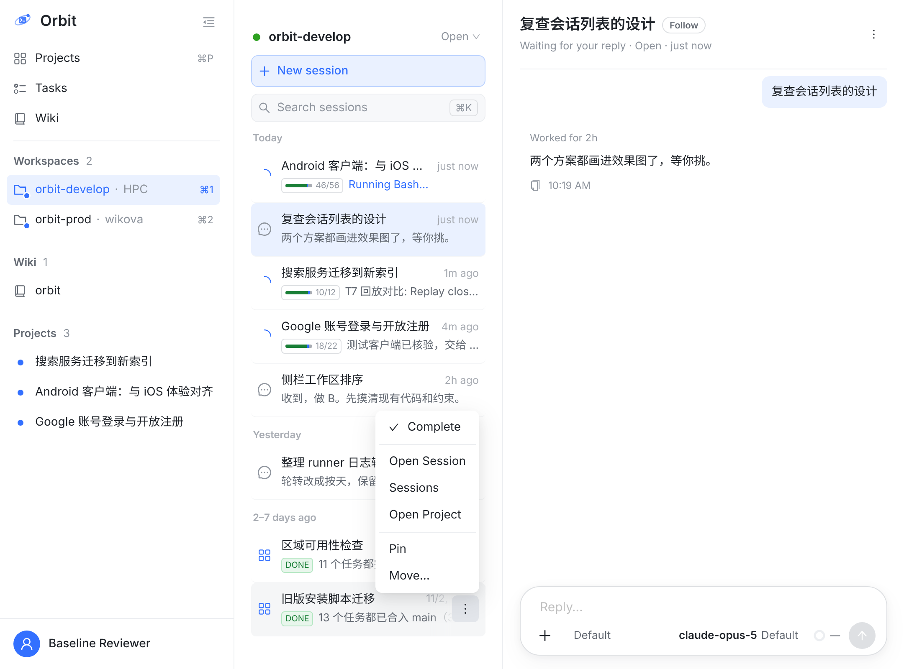

④ 和 A/B 无关做完的项目一直留在 Open 里

→⋯

- 真实数据：你最近 7 个 DONE 的项目，6 个的 coordinator 还在 Open；其中 5 个已经约三到五天没有新回合。它们一直占着 Open 列表的行。
- 项目 DONE 或 CANCELLED 后，项目行的菜单第一项是 Complete：把 coordinator 和这个项目还在 Open 的会话一起移进 Completed。iOS、Android 长按同样加。
- 当初条目菜单故意不放 Complete（设计文档 §4.3：「完成 coordinator 会影响整个项目，要在对话里做」）。项目做完以后，这个理由就不成立了。
- 不自动移走：有的 coordinator 在项目 DONE 后还在干活（比如还在盯磁盘的那个），由你决定什么时候收。
- 原型里 Complete 只完成 coordinator；成员一起走，要服务端一个口子（或客户端逐条完成），见「落地」。